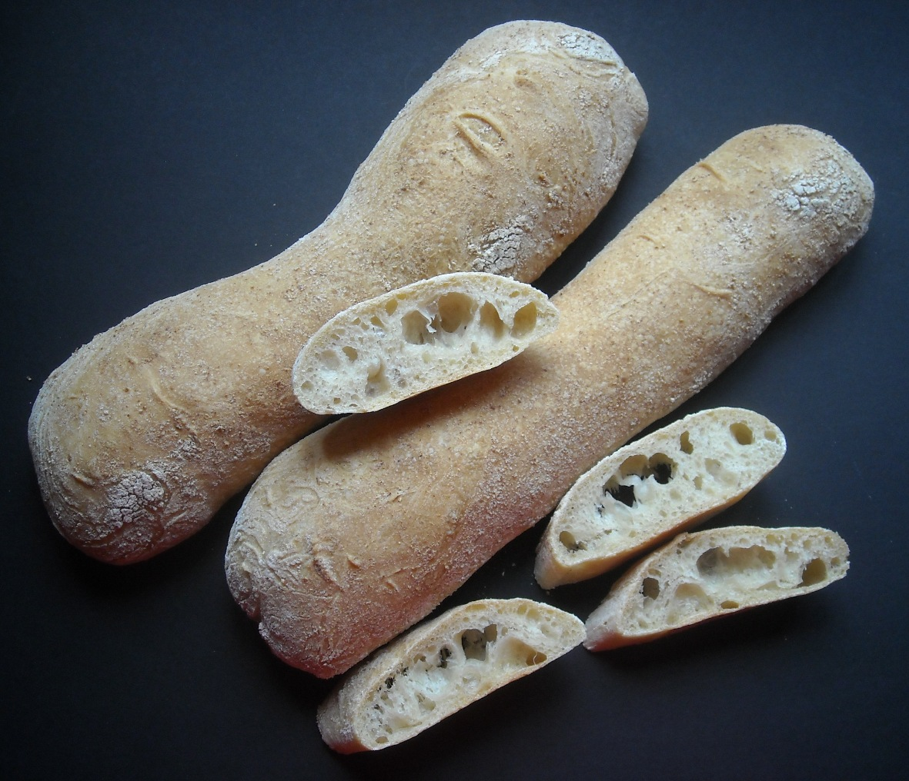

Home
Ciabatta

Description
This very simple ciabatta bread recipe can be made in the bread machine using the dough cycle.
Credit: Marina at AllRecipes
Ingredients
- 3.5 dl water
- 1 tablespoon olive oil
- 7.5 dl bread flour
- 1.5 teaspoons salt
- 1 teaspoon white sugar
- 1.5 teaspoons bread machine yeast
Steps
- Place water, olive oil, bread flour, salt, sugar, and yeast into a bread machine in the order listed, or follow the order recommended by the manufacturer if different. Run the Dough cycle, about 90 minutes.
- Remove dough from the machine after the cycle is done. It will be quite sticky and wet; resist the temptation to add more flour. Place dough onto a generously floured board, cover with a large bowl or greased plastic wrap, and let rest for 15 minutes.
- Lightly flour two baking sheets or line them with parchment paper. Cut dough with a serrated knife into two equal pieces; form each into piece into a 3x14-inch oval. Tranfer loaves to the prepared baking sheets and dust lightly with flour. Cover and let rise in a draft-free place for approximately 45 minutes.
- Preheat the oven to 220 degrees C.
- Spritz loaves with water, then place onto the middle rack of the preheated oven. Bake until golden brown, 25 to 30 minutes.
Editor's Note:
To make this recipe in a stand mixer, combine all of the ingredients except the olive oil in the mixing bowl. Mix on low speed using the dough hook, scraping the dough down occasionally, for 10 minutes. Add olive oil and mix for an additional 5 minutes. Transfer the dough to a floured board and proceed with Step 2.